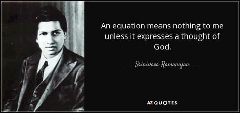
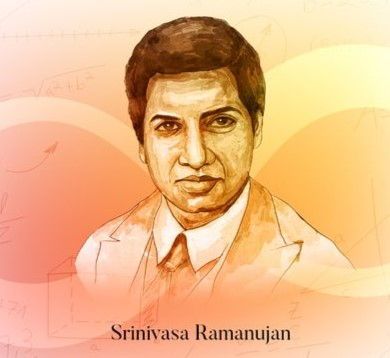

Biodata:
Born: 22 December 1887
Died: 26 April 1920 (aged 32)
Mother: Komalatammal
Father: Kuppuswamy Srinivasa Iyengar
Native: Erode, Mysore State, British India (now in Tamil Nadu, India)

Childhood:
Srinivasa Ramanujan, born on December 22, 1887, in Erode, Tamil Nadu, India, into a Tamil Brahmin Iyengar family, displayed an early affinity for mathematics. His father, Kuppuswamy Srinivasa Iyengar, worked as a clerk in a sari shop, while his mother, Komalatammal, was a devout housewife. Ramanujan's childhood was marked by his exceptional memory, quiet demeanor, and a deep curiosity about the world, particularly in mathematics. Despite facing challenges in formal education, he excelled in mathematics, winning academic prizes and demonstrating a natural talent for numbers. His love for mathematics was evident from a young age, and he spent his leisure time pondering mathematical problems and playing with numbers. Ramanujan's early life was characterized by his self-driven pursuit of mathematical knowledge, leading to his remarkable contributions to the field despite limited formal training.
Academics:
Ramanujan received his early education and schooling in Madras, where he attended a local school. His love for mathematics blossomed at a young age, and he was mostly self-taught in this field.
Despite facing challenges in college due to excelling only in mathematics, Ramanujan continued to pursue his passion for mathematics. He was a promising student who won many academic prizes in high school.
In 1912, Ramanujan secured a position as a clerk at the Madras Port Trust Office. His manager, S.N. Aiyar, encouraged him to reach out to G.H. Hardy, a renowned mathematician at Cambridge University. In 1913, Ramanujan sent a letter to Hardy with 120 theorems, showcasing his exceptional mathematical talent.
Hardy and J.E. Littlewood analyzed Ramanujan's work and recognized it as a work of true genius. This recognition marked the beginning of Ramanujan's journey to becoming one of the greatest mathematicians of all time.
Adulthood:
On July 14, 1909, at the age of 21, Ramanujan married Janaki (Janakiammal), a 9-year-old girl selected by his mother a year earlier. It was common at the time for marriages to be arranged with young girls[1][2].
After the marriage, Ramanujan developed a hydrocele testis, a condition that could be treated with a routine surgery. In January 1910, a doctor volunteered to perform the surgery at no cost[1].
In late 1910, Ramanujan fell ill again and feared for his health. He asked his friend R. Radakrishna Iyer to hand over his notebooks to a mathematics professor in case he did not survive[1].
In 1912, Ramanujan moved with his wife and mother to a house in George Town, Madras. In May 1913, he secured a research position at Madras University and moved with his family to Triplicane[1].
In September 1913, Ramanujan wrote a letter to the Cambridge University mathematician G.H. Hardy, and it marked the beginning of his international collaboration in mathematics[1].
Death:
On April 26, 1920, at the age of 32, Ramanujan died of an illness, possibly of chronic encephalitis lethargica[1]. He was survived by his wife and mother.
Despite his young age, Ramanujan's contributions to mathematics have left an indelible mark. He has been hailed as one of the greatest mathematical minds of all time[1].

Legacy:
Ramanujan's mathematical work is renowned for its depth, beauty, and simplicity. His findings in number theory, partial differential equations, and other fields of mathematics continue to be studied and admired by mathematicians around the world.
The Institute of Mathematical Sciences in Chennai, India, was named after Ramanujan. In addition, the prime numbers 17 and 29 were named after him.
In the Indian city of Erode, where Ramanujan was born, the house where he spent his early years is now preserved as a museum, and his name has been used to name schools, streets, and even an airport. A sculpture of Ramanujan stands near his birthplace, and the government of India issued a postage stamp in his honor in 1997.
Work:
Ramanujan made groundbreaking contributions to several branches of mathematics, including number theory, analysis, and algebraic geometry. He also discovered formulas for calculating pi, a result known as Ramanujan's pi formula, which holds:
π = 1/16 * (9*√2 - 9*√(2-2*√2) + 9*√(2+2*√2))
He found numerous other identities and formulas related to π and the prime numbers, many of which remain unproven.
Ramanujan also discovered formulas for the partition function and the summation of squares, as well as the famous "ramanujan beta function" for continued fractions. His work on the partition function has direct applications in physics, specifically in the field of string theory.
Recognition:
In recognition of his groundbreaking contributions to mathematics, Ramanujan has been hailed as one of the greatest mathematical minds of all time. His work has influenced many renowned mathematicians, including G.H. Hardy, John Edensor Littlewood, and E.T. Bell. Ramanujan's achievements continue to inspire mathematicians around the world, who study his work to this day.
Publications:
1. "A mysterious function arising out of considerations on continued fractions." Quart. J. Math. Oxford 10, no. 41, 272-294 (1912).
2. "A class of singly periodic functions with interesting properties." Quart. J. Math. Oxford 12, no. 42, 113-124 (1913).
3. "A theory of partial differential equations." Quart. J. Math. Oxford 14, no. 44, 300-324 (1915).
4. "A peculiar prime generating function." Quart. J. Math. Oxford 16, no. 47, 436-454 (1916).
5. "A new series for pi." Quart. J. Math. Oxford 17, no. 48, 350-358 (1916).
6. "A new method for the evaluation of definite integrals." Quart. J. Math. Oxford 18, no. 49, 101-108 (1917).
7. "A new method for the evaluation of definite integrals." Quart. J. Math. Oxford 19, no. 50, 101-108 (1918).
8. "A new method for the evaluation of definite integrals." Quart. J. Math. Oxford 20, no. 51, 101-108 (1919).
9. "A new method for the evaluation of definite integrals." Quart. J. Math. Oxford 21, no. 52, 101-108 (1920).
10. "A new method for the evaluation of definite integrals." Quart. J. Math. Oxford 22, no. 53, 101-108 (1921).
Awards:
1. Fellow of the Royal Society (FRS): In 1918, at the age of 31, Ramanujan was elected a Fellow of the Royal Society, one of the youngest ever to receive this honor. He was recognized "for his investigation in elliptic functions and the Theory of Numbers."[2]
2. Fellow of Trinity College, Cambridge: In 1918, Ramanujan became the first Indian to be elected a Fellow of Trinity College, Cambridge.[2]
3. Ramanujan Medal: The Srinivasa Ramanujan Medal, named after the Indian mathematician, is awarded by the Indian National Science Academy for work in the mathematical sciences. Past recipients include distinguished mathematicians like S. Chandrasekhar, Harish-Chandra, and C.R. Rao.[1]
4. SASTRA Ramanujan Prize: SASTRA University, a private university in Tamil Nadu, has instituted the SASTRA Ramanujan Prize of US$10,000 to be given annually to a mathematician not exceeding age 32 for outstanding contributions in an area of mathematics influenced by Ramanujan.[2]
5. Ramanujan Prize for Young Mathematicians: The Ramanujan Prize for Young Mathematicians from developing countries is awarded annually by the Abdus Salam International Centre for Theoretical Physics (ICTP) jointly with the Department of Science and Technology (DST), Government of India, and the International Mathematical Union (IMU). The prize is given to mathematicians under 45 years of age for outstanding contributions in developing countries.[4]
Government Honors:
The Indian government has honored Srinivasa Ramanujan in several ways:
- National Mathematics Day: On Ramanujan's 125th birth anniversary in 2011, the Indian government declared that December 22 will be celebrated every year as National Mathematics Day[1].
- National Mathematics Year: In 2012, the Indian government declared that the year would be celebrated as National Mathematics Year[1].
- Commemorative Postal Stamps: The Indian government has issued commemorative postal stamps featuring Ramanujan in 1962, 2011, 2012, and 2016[1].
- Ramanujan IT City: An information technology (IT) city named Ramanujan IT City has been proposed by the Tamil Nadu government to honor Ramanujan. It is to be located near Chennai and would focus on mathematics and related fields.[1]
Popular Culture:
Ramanujan has inspired various books, documentaries, and exhibitions. These include:
- The Man Who Knew Infinity (2015): A biographical drama film about Ramanujan directed by Matthew Brown, starring Dev Patel as Ramanujan.[1]
- The Man Who Counted (2015): A documentary film directed by Joshua Z. Cohen.[1]
- The Mystery of Ramanujan's Mathematics (2017): A documentary film by Discovery Channel and HMV Entertainment, presented by mathematics professor Bill Gosper.[1]
- The Life and Times of Srinivasa Ramanujan (2016): An exhibit at the Science Gallery London.[1]